cherry-plum
Prunus cerasifera
Member of
plums, cherries, and allies (genus Prunus)
rose family (family Rosaceae)
dicots (class Magnoliopsida)
white in flowering plants
 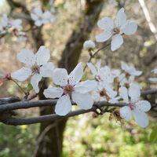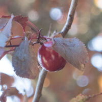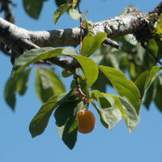
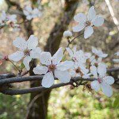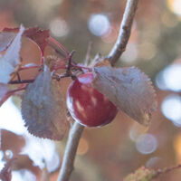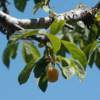
Toxicity:
in general for flowering plum, ornamental flowering plum, purple leaf plum (Prunus cerasifera 'atropurpurea'):
4 – Ingestion of these plants, especially in large amounts, is expected to cause serious effects to the heart, liver, kidneys or brain. If ingested in any amount, call the poison center immediately.
chewed seeds of ornamental cherry, ornamental plum (Prunus spp.):
4 – Ingestion of these plants, especially in large amounts, is expected to cause serious effects to the heart, liver, kidneys or brain. If ingested in any amount, call the poison center immediately.
Chris’s observations: 9 (2 are research grade)
Locations:
- Edgewood Park & Natural Preserve: 3
- Sweeney Ridge National Recreation Area: 2
- Coyote Creek Trail
- Dry Creek Pioneer RP
- San Pedro Valley CP
- Windy Hill OSP
Months:
- Feb.: 3
- Mar.: 3
- Apr.: 1
- May: 0
- Jun.: 1
- Jul.: 1
For more details, use advanced search.
Taxon info:
iNaturalist
–
Calflora
–
CalPhotos
–
Jepson eFlora
–
FNA
Bay Area species:
iNaturalist
–
Calflora
 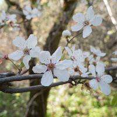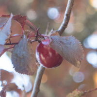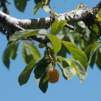
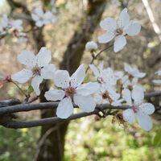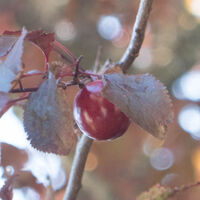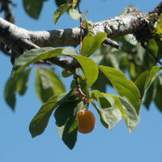
{kind=link}
{kind=link}
{kind=link}